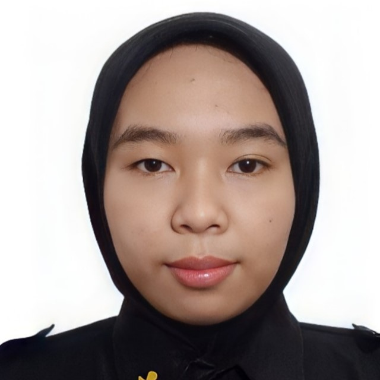

DEWAN PENGURUS HARIAN 6
DEWAN PENGURUS HARIAN 6
Shobir Juntri Yoga
Ketua UmumAlfian Wardhana Jarot Cantika Putra
Wakil Ketua UmumWiam Ferdyansyah
Sekretaris UmumIftahul Huda
Bendahara UmumAndini Pramesti Kusumawardani
Sekretaris SatuKarmila Novi Arfiana
Bendahara Satu
BIDANG 1 - INTERNAL
BIDANG 1 - INTERNAL
Novian Putra Abdullah
Ketua Bidang 1Rosita Ayu Tri Lestari
Sekretaris Bidang 1Dea Rizki Wulan Oktafia
Ketua Subbidang KerohanianImam Muhadi
Ketua Subbidang Rumah Tangga
BIDANG 2 - PENCEGAHAN
BIDANG 2 - PENCEGAHAN
Ryandra Diotama Subagja
Ketua Bidang 2Utari Zain Athaya
Sekretaris Bidang 2Yulia Eka Ardhani
Ketua Subbidang Pencengahan PenyalahgunaanDini Pratiwi
Ketua Subbidang Peredaran Gelap Narkoba
BIDANG 3 - HUBUNGAN MASYARAKAT
BIDANG 3 - HUBUNGAN MASYARAKAT
Devanda Enrico Firmansyah
Ketua Bidang 3

Savira Aprilia Sintia Dewi
Sekretaris Bidang 3Amelia Marshanda Syahputri
Ketua Subbidang InternalSafrina Putri Kusumawardani
Ketua Subbidang Eksternal
BIDANG 4 - TERAPI & REHABILITASI
BIDANG 4 - TERAPI & REHABILITASI
Muhammad Faried Akmal Alaudien Yahya
Ketua Bidang 4Ratih Luthfiya Dewi Fashihah
Sekretaris Bidang 4Nadhira Aulia
Ketua Subbidang TerapiDolro Maruli Ritonga
Ketua Subbidang Rehabilitasi
BIDANG 5 - PENELITIAN & PENGEMBANGAN